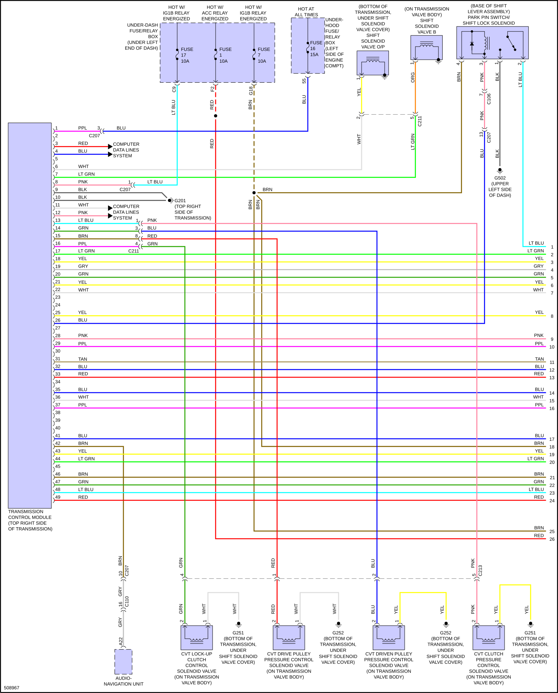
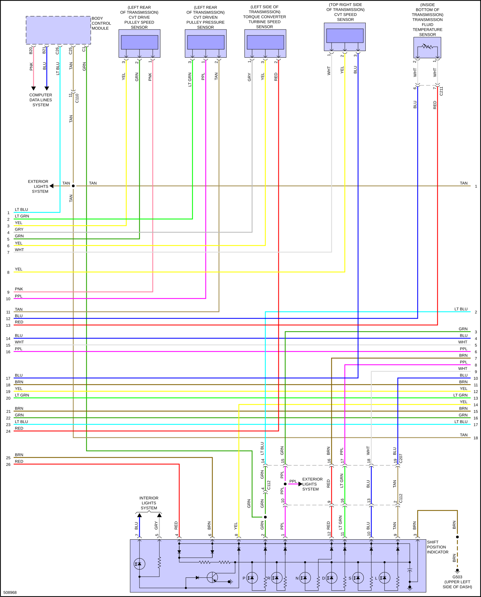
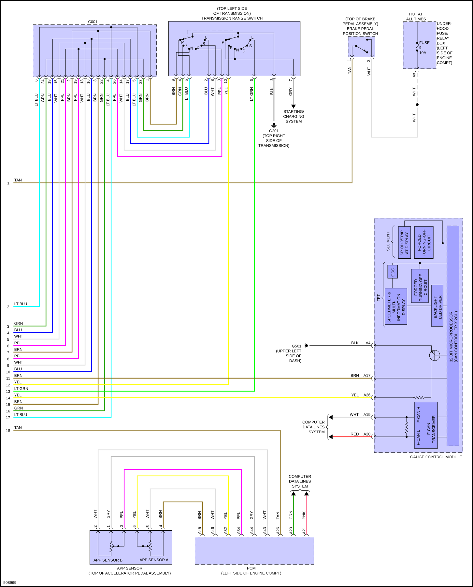

LEMON Manuals
: Even more car manuals for everyone: 1960-2025
Home
>>
Honda
>>
2016
>>
Civic LX, 4D Sedan, Automatic CVT Trans
>>
Repair and Diagnosis (Single Page)
>>
Electrical
>>
Wiring Diagrams
>>
System Wiring Diagrams
>>
Transmission
>>
1.5L Turbo
1.5L Turbo
Fig 1: 1.5L Turbo, Transmission Circuit (1 of 3)

Fig 2: 1.5L Turbo, Transmission Circuit (2 of 3)

Fig 3: 1.5L Turbo, Transmission Circuit (3 of 3)
